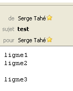
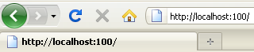
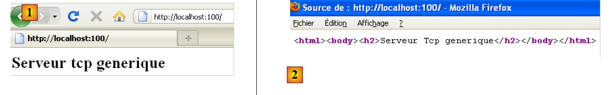

11. As funções de rede do Python
Passamos agora a abordar as funções de rede do Python que nos permitem programar em TCP / IP (Transfer Control Protocol / Internet Protocol).
 |
11.1. Obter o nome ou o endereço IP de um computador na Internet
import sys, socket
#------------------------------------------------
def getIPandName(nomMachine):
#nomMachine: nome do computador cujo endereço se pretende obter IP
# nomMachine-->endereço IP
try:
ip=socket.gethostbyname(nomMachine)
print "ip[%s]=%s" % (nomMachine,ip)
except socket.error, erreur:
print "ip[%s]=%s" % (nomMachine,erreur)
return
# endereço IP --> nomMachine
try:
name=socket.gethostbyaddr(ip)
print "name[%s]=%s" % (ip,name[0])
except socket.error, erreur:
print "name[%s]=%s" % (ip,erreur)
return
# ---------------------------------------- principal
# constantes
HOTES=["istia.univ-angers.fr","www.univ-angers.fr","www.ibm.com","localhost","","xx"]
# endereços IP das máquinas de HOTES
for i in range(len(HOTES)):
getIPandName(HOTES[i])
# fim
sys.exit()
Notas:
- linha 1: as funções de rede do Python estão encapsuladas no módulo socket.
11.2. Um cliente web
Um script que permite obter o conteúdo do parágrafo «index» de um site web.
import sys,socket
#-----------------------------------------------------------------------
def getIndex(site):
# lê o site URL e armazena-o no ficheiro site.html
# inicialmente sem erros
erreur=""
# criação do ficheiro site.html
try:
html=open("%s.html" % (site),"w")
except IOError, erreur:
pass
# erro?
if erreur:
return "Erreur (%s) lors de la création du fichier %s.html" % (erreur,site)
# abertura de uma ligação na porta 80 do site
try:
connexion=socket.create_connection((site,80))
except socket.error, erreur:
pass
# retorno em caso de erro
if erreur:
return "Echec de la connexion au site (%s,80) : %s" % (site,erreur)
# a ligação representa um fluxo de comunicação bidirecional
# entre o cliente (este programa) e o servidor web contactado
# este canal é utilizado para a troca de comandos e informações
# o protocolo de comunicação é HTTP
# o cliente envia o comando get para solicitar o URL /
# sintaxe «get» URL HTTP/1.0
# os cabeçalhos (headers) do protocolo HTTP devem terminar com uma linha em branco
connexion.send("GET / HTTP/1.0\n\n")
# o servidor vai agora responder no canal de ligação. Vai enviar todos
# os seus dados e, em seguida, encerrará o canal. O cliente lê tudo o que chega pelo canal de ligação
# até ao encerramento do canal
ligne=connexion.recv(1000)
while(ligne):
html.write(ligne)
ligne=connexion.recv(1000)
# o cliente, por sua vez, encerra a ligação
connexion.close()
# fecho do ficheiro HTML
html.close()
# retorno
return "Transfert reussi du paragraphe index du site %s" % (site)
# --------------------------------------------- main
# obter o texto HTML de URL
# lista de sites
SITES=("istia.univ-angers.fr","www.univ-angers.fr","www.ibm.com","xx")
# leitura das páginas de índice dos sites da tabela SITES
for i in range(len(SITES)):
# leitura da página de índice do site SITES[i]
resultat=getIndex(SITES[i])
# exibição do resultado
print resultat
# fim
sys.exit()
Notas:
- linha 57: a lista de URLs dos sites cuja página inicial se pretende obter. Esta lista está armazenada no ficheiro de texto [nomsite.html];
- linha 62: a função getIndex executa a tarefa;
- linha 4: a função getIndex;
- linha 20: o método create_connection((site,port)) permite criar uma ligação com um serviço TCP / IP a funcionar na porta port do computador «site»;
- linha 35: o método send permite enviar dados através de uma ligação TCP / IP. Neste caso, o que é enviado é texto. Este texto segue o protocolo HTTP (Protocolo de Transferência HyperText);
- linha 40: o método recv permite receber dados através de uma ligação TCP / IP. Aqui, a resposta do servidor web é lida em blocos de 1000 caracteres e gravada no ficheiro de texto [nomsite.html].
Transfert reussi du paragraphe index du site istia.univ-angers.fr
Transfert reussi du paragraphe index du site www.univ-angers.fr
Transfert reussi du paragraphe index du site www.ibm.com
Echec de la connexion au site (xx,80) : [Errno 11001] getaddrinfo failed
O ficheiro recebido para o site [www.ibm.com]:
- as linhas 1 a 11 correspondem aos cabeçalhos HTTP da resposta do servidor;
- linha 1: o servidor solicita ao cliente que se redirecione para o URL indicado na linha 8;
- linha 2: data e hora da resposta;
- linha 3: identidade do servidor web;
- linha 4: conteúdo enviado pelo servidor. Neste caso, uma página HTML que começa na linha 13;
- linha 12: a linha vazia que encerra os cabeçalhos HTTP;
- linhas 13-19: a página HTML enviada pelo servidor web.
11.3. Um cliente SMTP
Entre os protocolos TCP / IP, o SMTP (SendMail Transfer Protocol) é o protocolo de comunicação do serviço de envio de mensagens.
# -*- coding=utf-8 -*-
import sys,socket
#-----------------------------------------------------------------------
def getInfos(fichier):
# retorna as informações (SMTP, remetente, destinatário, mensagem) extraídas do ficheiro de texto [fichier]
# linha 1: smtp, remetente, destinatário
# linhas seguintes: o texto da mensagem
# abertura de [fichier]
erreur=""
try:
infos=open(fichier,"r")
except IOError, erreur:
return ("Le fichier %s n'a pu etre ouvert en lecture : %s" % (fichier, erreur))
# leitura da 1.ª linha
ligne=infos.readline()
# remoção do caractere de fim de linha
ligne=cutNewLineChar(ligne)
# recuperação dos campos smtp, remetente, destinatário
champs=ligne.split(",")
# Temos o número correto de campos?
if len(champs)!=3 :
return ("La ligne 1 du fichier %s (serveur smtp, expediteur, destinataire) a un nombre de champs incorrect" % (fichier))
# «processamento» das informações recuperadas
# removemos de cada um dos 3 campos os «espaços em branco» que precedem ou seguem a informação útil
for i in range(3):
champs[i]=champs[i].strip()
# recuperação dos campos
(smtpServer,expediteur,destinataire)=champs
message=""
# leitura do resto da mensagem
ligne=infos.readline()
while ligne!='':
message+=ligne
ligne=infos.readline()
infos.close()
# retorno
return ("",smtpServer,expediteur,destinataire,message)
#-----------------------------------------------------------------------
def sendmail(smtpServer,expediteur,destinataire,message,verbose):
# envia a mensagem para o servidor SMTP smtpserver em nome do remetente
# para o destinatário. Se verbose=True, efetua um acompanhamento das trocas cliente-servidor
# recupera-se o nome do cliente
try:
client=socket.gethostbyaddr(socket.gethostbyname("localhost"))[0]
except socket.error, erreur:
return "Erreur IP / Nom du client : %s" % (erreur)
# abertura de uma ligação na porta 25 do smtpServer
try:
connexion=socket.create_connection((smtpServer,25))
except socket.error, erreur:
return "Echec de la connexion au site (%s,25) : %s" % (smtpServer,erreur)
# a ligação representa um fluxo de comunicação bidirecional
# entre o cliente (este programa) e o servidor SMTP contactado
# este canal é utilizado para a troca de comandos e informações
# após a ligação, o servidor envia uma mensagem de boas-vindas que é lida
erreur=sendCommand(connexion,"",verbose,1)
if(erreur) :
connexion.close()
return erreur
# comando «ehlo»:
erreur=sendCommand(connexion,"EHLO %s" % (client),verbose,1)
if erreur :
connexion.close()
return erreur
# comando mail from:
erreur=sendCommand(connexion,"MAIL FROM: <%s>" % (expediteur),verbose,1)
if erreur :
connexion.close()
return erreur
# comando rcpt to:
erreur=sendCommand(connexion,"RCPT TO: <%s>" % (destinataire),verbose,1)
if erreur :
connexion.close()
return erreur
# comando «data»
erreur=sendCommand(connexion,"DATA",verbose,1)
if erreur :
connexion.close()
return erreur
# preparação da mensagem a enviar
# deve conter as linhas
# De: remetente
# Para: destinatário
# linha em branco
# Mensagem
# .
data="From: %s\r\nTo: %s\r\n%s\r\n.\r\n" % (expediteur,destinataire,message)
# envio da mensagem
erreur=sendCommand(connexion,data,verbose,0)
if erreur :
connexion.close()
return erreur
# comando de saída
erreur=sendCommand(connexion,"QUIT",verbose,1)
if erreur :
connexion.close()
return erreur
# fim
connexion.close()
return "Message envoye"
# --------------------------------------------------------------------------
def sendCommand(connexion,commande,verbose,withRCLF):
# envia comando no canal de ligação
# modo detalhado se verbose=1
# se withRCLF=1, adiciona a sequência RCLF ao comando
# dados
RCLF="\r\n" if withRCLF else ""
# envio do comando se o comando não estiver vazio
if commande:
connexion.send("%s%s" % (commande,RCLF))
# eventual resposta
if verbose:
affiche(commande,1)
# leitura da resposta com menos de 1000 caracteres
reponse=connexion.recv(1000)
# eco eventual
if verbose:
affiche(reponse,2)
# recuperação do código de erro
codeErreur=reponse[0:3]
# erro devolvido pelo servidor?
if int(codeErreur) >=500:
return reponse[4:]
# resposta sem erros
return ""
# --------------------------------------------------------------------------
def affiche(echange,sens):
# exibe a troca de dados no ecrã?
# se sens=1, exibe -->troca
# se sens=2, exibe <-- troca sem os dois últimos caracteres RCLF
if sens==1:
print "--> [%s]" % (echange)
return
elif sens==2:
l=len(echange)
print "<-- [%s]" % echange[0:l-2]
return
# --------------------------------------------------------------------------
def cutNewLineChar(ligne):
# elimina-se o marcador de fim de linha de [ligne], caso exista
l=len(ligne)
while(ligne[l-1]=="\n" or ligne[l-1]=="\r"):
l-=1
return(ligne[0:l])
# main ----------------------------------------------------------------
# cliente SMTP (Protocolo de Transferência SendMail) que permite enviar uma mensagem
# as informações são extraídas de um ficheiro INFOS que contém as seguintes linhas
# linha 1: smtp, remetente, destinatário
# linhas seguintes: o texto da mensagem
# remetente: e-mail do remetente
# destinatário: e-mail do destinatário
# SMTP: nome do servidor SMTP a utilizar
# protocolo de comunicação SMTP cliente-servidor
# -> o cliente liga-se à porta 25 do servidor SMTP
# <- o servidor envia-lhe uma mensagem de boas-vindas
# -> o cliente envia o comando EHLO: nome do seu computador
# <- o servidor responde com OK ou não
# -> o cliente envia o comando «mail from: <remetente>»
# <- o servidor responde com OK ou não
# -> o cliente envia o comando rcpt to: <destinatário>
# <- o servidor responde com OK ou não
# -> o cliente envia o comando «data»
# <- o servidor responde com OK ou não
# -> o cliente envia todas as linhas da sua mensagem e termina com uma linha que contém apenas o caractere .
# <- o servidor responde com OK ou não
# -> o cliente envia o comando «quit»
# <- o servidor responde com OK ou não
# as respostas do servidor têm o formato xxx texto, em que xxx é um número de 3 dígitos. Qualquer número xxx >=500
# indica um erro. A resposta pode conter várias linhas, todas começando por xxx-, exceto a última
# no formato xxx(espaço)
# as linhas de texto trocadas devem terminar com os caracteres RC(#13) e LF(#10)
# # os parâmetros de envio do e-mail
MAIL="mail2.txt"
# recuperam-se os parâmetros do e-mail
res=getInfos(MAIL)
# erro?
if res[0]:
print "%s" % (erreur)
sys.exit()
# envio de e-mail em modo detalhado
(smtpServer,expediteur,destinataire,message)=res[1:]
print "Envoi du message [%s,%s,%s]" % (smtpServer,expediteur,destinataire)
resultat=sendmail(smtpServer,expediteur,destinataire,message,True)
print "Resultat de l'envoi : %s" % (resultat)
# fim
sys.exit()
Notas:
- num computador Windows equipado com um antivírus, este poderá impedir que o script Python se ligue à porta 25 de um servidor SMTP. Nesse caso, é necessário desativar o antivírus. Para o McAfee, por exemplo, pode proceder da seguinte forma:
 |
- no [1], ativa-se a consola VirusScan
- em [2], desativa-se o serviço [Protection lors de l'accès]
- em [3], o serviço está parado
O ficheiro infos.txt:
smtp.univ-angers.fr, serge.tahe@univ-angers.fr , serge.tahe@univ-angers.fr
Subject: test
ligne1
ligne2
ligne3
Resultados no ecrã:
A mensagem lida pelo cliente de e-mail Thunderbird:
 |
11.4. Um segundo cliente SMTP
Este segundo script faz o mesmo que o anterior, mas utilizando as funcionalidades do módulo [smtplib].
# -*- coding=utf-8 -*-
import sys,socket, smtplib
#-----------------------------------------------------------------------
def getInfos(fichier):
# retorna as informações (SMTP, remetente, destinatário, mensagem) extraídas do ficheiro de texto [fichier]
# linha 1: smtp, remetente, destinatário
# linhas seguintes: o texto da mensagem
# abertura do ficheiro [fichier]
erreur=""
try:
infos=open(fichier,"r")
except IOError, erreur:
return ("Le fichier %s n'a pu etre ouvert en lecture : %s" % (fichier, erreur))
# leitura da 1.ª linha
ligne=infos.readline()
# remoção do caractere de fim de linha
ligne=cutNewLineChar(ligne)
# recuperação dos campos smtp, remetente, destinatário
champs=ligne.split(",")
# Temos o número correto de campos?
if len(champs)!=3 :
return ("La ligne 1 du fichier %s (serveur smtp, expediteur, destinataire) a un nombre de champs incorrect" % (fichier))
# «processamento» das informações recuperadas — removem-se os «espaços» que as precedem ou seguem
for i in range(3):
champs[i]=champs[i].strip()
# recuperação dos campos
(smtpServer,expediteur,destinataire)=champs
# leitura da mensagem a enviar
message=""
ligne=infos.readline()
while ligne!='':
message+=ligne
ligne=infos.readline()
infos.close()
# retorno
return ("",smtpServer,expediteur,destinataire,message)
#-----------------------------------------------------------------------
def sendmail(smtpServer,expediteur,destinataire,message,verbose):
# envia a mensagem para o servidor SMTP smtpserver em nome do remetente
# para o destinatário. Se verbose=True, efetua um acompanhamento das trocas cliente-servidor
# utiliza-se a biblioteca smtplib
try:
server = smtplib.SMTP(smtpServer)
if verbose:
server.set_debuglevel(1)
server.sendmail(expediteur, destinataire, message)
server.quit()
except Exception, erreur:
return "Erreur envoi du message : %s" % (erreur)
# fim
return "Message envoye"
# --------------------------------------------------------------------------
def cutNewLineChar(ligne):
# elimina-se o marcador de fim de linha de [ligne], caso exista
l=len(ligne)
while(ligne[l-1]=="\n" or ligne[l-1]=="\r"):
l-=1
return(ligne[0:l])
# main ----------------------------------------------------------------
# cliente SMTP (Protocolo de Transferência SendMail) que permite enviar uma mensagem
# as informações são extraídas de um ficheiro INFOS que contém as seguintes linhas
# linha 1: smtp, remetente, destinatário
# linhas seguintes: o texto da mensagem
# remetente: e-mail do remetente
# destinatário: e-mail do destinatário
# SMTP: nome do servidor SMTP a utilizar
# protocolo de comunicação SMTP cliente-servidor
# -> o cliente liga-se à porta 25 do servidor SMTP
# <- o servidor envia-lhe uma mensagem de boas-vindas
# -> o cliente envia o comando EHLO: nome do seu computador
# <- o servidor responde com OK ou não
# -> o cliente envia o comando mail from: <remetente>
# <- o servidor responde com OK ou não
# -> o cliente envia o comando rcpt to: <destinatário>
# <- o servidor responde com OK ou não
# -> o cliente envia o comando «data»
# <- o servidor responde com OK ou não
# -> o cliente envia todas as linhas da sua mensagem e termina com uma linha que contém apenas o caractere .
# <- o servidor responde com OK ou não
# -> o cliente envia o comando «quit»
# <- o servidor responde com OK ou não
# as respostas do servidor têm o formato xxx texto, em que xxx é um número de 3 dígitos. Qualquer número xxx >=500
# indica um erro. A resposta pode conter várias linhas, todas começando por xxx-, exceto a última
# no formato xxx(espaço)
# as linhas de texto trocadas devem terminar com os caracteres RC(#13) e LF(#10)
# # os parâmetros de envio do e-mail
MAIL="mail2.txt"
# recuperam-se os parâmetros do e-mail
res=getInfos(MAIL)
# erro?
if res[0]:
print "%s" % (erreur)
sys.exit()
# envio do e-mail em modo detalhado
(smtpServer,expediteur,destinataire,message)=res[1:]
print "Envoi du message [%s,%s,%s]" % (smtpServer,expediteur,destinataire)
resultat=sendmail(smtpServer,expediteur,destinataire,message,True)
print "Resultat de l'envoi : %s" % (resultat)
# fim
sys.exit()
Notas:
- este script é idêntico ao anterior, com exceção da função sendmail. Esta função utiliza agora as funcionalidades do módulo [smtplib] (linha 3).
O ficheiro mail2.txt:
smtp.univ-angers.fr, serge.tahe@univ-angers.fr , serge.tahe@univ-angers.fr
From: serge.tahe@univ-angers.fr
To: serge.tahe@univ-angers.fr
Subject: test
ligne1
ligne2
ligne3
Resultados no ecrã:
11.5. Cliente/servidor de eco
Cria-se um serviço de eco. O servidor devolve, em maiúsculas, todas as linhas de texto que o cliente lhe envia. O serviço pode servir vários clientes ao mesmo tempo graças à utilização de threads.
# -*- coding=utf-8 -*-
# servidor TCP genérico no Windows
# carregamento dos ficheiros de cabeçalho
import re,sys,SocketServer,threading
# servidor TCP multithread
class ThreadedTCPRequestHandler(SocketServer.StreamRequestHandler):
def handle(self):
# thread atual
cur_thread = threading.currentThread()
# dados do cliente
self.data="on"
# paragem em cadeia vazia
while self.data:
# as linhas de texto do cliente são lidas com o método readline
self.data =self.rfile.readline().strip()
# monitorização da consola
print "client %s : %s (%s)" % (self.client_address[0],self.data,cur_thread.getName())
# envio da resposta ao cliente
response = "%s: %s" % (cur_thread.getName(), self.data.upper())
# self.wfile é o fluxo de escrita para o cliente
self.wfile.write(response)
class ThreadedTCPServer(SocketServer.ThreadingMixIn, SocketServer.TCPServer):
pass
# ------------------------------------------------------ main
# sintaxe da chamada: argv[0] porta
# o servidor é iniciado na porta indicada
# Dados
syntaxe="syntaxe : %s port" % (sys.argv[0])
#------------------------------------- verifica-se a chamada
# deve haver um único argumento
nbArguments=len(sys.argv)
if nbArguments!=2:
print syntaxe
sys.exit(1)
# a porta deve ser numérica
port=sys.argv[1]
modele=r"^\s*\d+\s*$"
if not re.match(modele,port):
print "Le port %s n'est pas un nombre entier positif\n" % (port)
sys.exit(2)
# inicialização do servidor — atende cada cliente numa thread
host="localhost"
server = ThreadedTCPServer((host,int(port)), ThreadedTCPRequestHandler)
# o servidor é iniciado numa thread
# cada cliente será atendido numa thread adicional
server_thread = threading.Thread(target=server.serve_forever)
# inicia o servidor - ciclo infinito de espera pelos clientes
server_thread.start()
# acompanhamento
print "Serveur d'echo a l'ecoute sur le port % s" % (port)
Notas:
- linha 39: sys.argv representa os parâmetros do script. Aqui, devem ter o formato: nom_du_script porta. Por isso, devem existir dois. sys.argv[0] passará a ser nom_du_script e sys.argv[1] passará a ser port ;
- linha 53: o servidor de eco é uma instância da classe ThreadedTcpServer. O construtor desta classe espera dois parâmetros:
- parâmetro 1: um tuplo de dois elementos (host, porta) que define o computador e a porta de escuta do servidor;
- parâmetro 2: o nome da classe responsável por processar os pedidos de um cliente.
- linha 57: é criado um thread (mas ainda não iniciado). Este thread executa o método [serve_forever] do servidor TCP. Este método é um ciclo de escuta de ligações de clientes. Assim que for detetada uma ligação de cliente, será criada uma instância da classe ThreadedTCPRequestHandler. O seu método handle é responsável pelo diálogo com o cliente;
- linha 59: o thread do serviço de eco é iniciado. A partir deste momento, os clientes podem ligar-se ao serviço;
- linha 27: a classe do servidor de eco. Esta deriva de duas classes: SocketServer.ThreadingMixIn e SocketServer.TCPServer. Isto torna-o num servidor TCP multithread: o servidor é executado num thread e cada cliente é atendido num thread adicional;
- linha 9: a classe que processa os pedidos dos clientes. Deriva da classe SocketServer.StreamRequestHandler. Herda, assim, dois atributos:
- rfile: que é o fluxo de leitura dos dados enviados pelo cliente — pode ser tratado como um ficheiro de texto;
- wfile: que é o fluxo de escrita que permite enviar dados ao cliente — pode ser tratado como um ficheiro de texto.
- linha 11: o método handle processa os pedidos dos clientes;
- linha 13: o thread que executa este método;
- linha 17: ciclo de processamento dos pedidos do cliente. O ciclo termina quando o cliente envia uma linha vazia;
- linha 19: leitura do pedido do cliente;
- linha 21: self.client_address[0] representa o endereço IP do cliente. cur_thread.getName() é o nome do thread que executa o método handle;
- linha 23: a resposta ao cliente tem duas componentes — o nome do thread que atende o cliente e o comando que este enviou, apresentado em maiúsculas.
# -*- coding=utf-8 -*-
import re,sys,socket
# ------------------------------------------------------ main
# cliente TCP genérico
# sintaxe da chamada: argv[0] host porta
# o cliente liga-se ao serviço de eco (host, porta)
# o servidor devolve as linhas digitadas pelo cliente
# sintaxe
syntaxe="syntaxe : %s hote port" % (sys.argv[0])
#------------------------------------- verifica-se a chamada
# devem existir dois argumentos
nbArguments=len(sys.argv)
if nbArguments!=3:
print syntaxe
sys.exit(1)
# recuperam-se os argumentos
hote=sys.argv[1]
# a porta deve ser numérica
port=sys.argv[2]
modele=r"^\s*\d+\s*$"
if not re.match(modele,port):
print "Le port %s foit être un nombre entier positif" % (port)
sys.exit(2)
try:
# ligação do cliente ao servidor
connexion=socket.create_connection((hote,int(port)))
except socket.error, erreur:
print "Echec de la connexion au site (%s,%s) : %s" % (hote,port,erreur)
sys.exit(3)
try:
# ciclo de introdução de dados
ligne=raw_input("Commande (rien pour arreter): ").strip()
while ligne!="":
# envia-se a linha para o servidor
connexion.send("%s\n" % (ligne))
# aguarda-se a resposta
reponse=connexion.recv(1000)
print "<-- %s" % (reponse)
ligne=raw_input("Commande (rien pour arreter): ")
except socket.error, erreur:
print "Echec de la connexion au site (%s,%s) : %s" % (hote,port,erreur)
sys.exit(3)
finally:
# encerra-se a ligação
connexion.close()
O servidor é iniciado numa primeira janela de comandos:
Um primeiro cliente é iniciado numa segunda janela:
O cliente recebe, de facto, em resposta ao comando que envia ao servidor, esse mesmo comando escrito em maiúsculas. Um segundo cliente é iniciado numa terceira janela:
O terminal do servidor apresenta então o seguinte:
Os clientes são efetivamente atendidos em threads diferentes. Para encerrar um cliente, basta introduzir um comando vazio.
11.6. Servidor TCP genérico
Propomos escrever um script em Python que
- será um servidor TCP capaz de atender um cliente de cada vez,
- aceite linhas de texto enviadas pelo cliente,
- aceite linhas de texto provenientes do teclado e que sejam enviadas em resposta ao cliente.
Assim, é o utilizador ao teclado que desempenha o papel de servidor:
- ele vê no seu terminal as linhas de texto enviadas pelo cliente;
- responde a este digitando a resposta no teclado.
Desta forma, pode adaptar-se a qualquer tipo de cliente. É por isso que lhe chamaremos «servidor TCP genérico». Trata-se de uma ferramenta prática para explorar protocolos de comunicação TCP. No exemplo que se segue, o cliente TCP será um navegador da Web, o que nos permitirá explorar o protocolo HTTP utilizado pelos clientes Web.
 |
# -*- coding=utf-8 -*-
# servidor TCP genérico
# carregamento dos ficheiros de cabeçalho
import re,sys,SocketServer,threading
# servidor TCP genérico
class MyTCPHandler(SocketServer.StreamRequestHandler):
def handle(self):
# exibição do cliente
print "client %s" % (self.client_address[0])
# criação de um thread para ler os comandos do cliente
thread_lecture = threading.Thread(target=self.lecture)
thread_lecture.start()
# encerramento ao receber o comando «bye»
# leitura do comando digitado no teclado
cmde=raw_input("--> ")
while cmde!="bye":
# envio do comando para o cliente. self.wfile é o fluxo de escrita para o cliente
self.wfile.write("%s\n" % (cmde))
# leitura do comando seguinte
cmde=raw_input("--> ")
def lecture(self):
# são apresentadas todas as linhas enviadas pelo cliente até se receber o comando «bye»
ligne=""
while ligne!="bye":
# as linhas de texto do cliente são lidas com o método readline
ligne = self.rfile.readline().strip()
# acompanhamento da consola
print "<--- %s : %s" % (self.client_address[0], ligne)
# ------------------------------------------------------ main
# sintaxe de chamada: argv[0] porta
# o servidor é iniciado na porta indicada
# Dados
syntaxe="syntaxe : %s port" % (sys.argv[0])
#------------------------------------- verifica-se a chamada
# deve haver um único argumento
nbArguments=len(sys.argv)
if nbArguments!=2:
print syntaxe
sys.exit(1)
# a porta deve ser numérica
port=sys.argv[1]
modele=r"^\s*\d+\s*$"
if not re.match(modele,port):
print "Le port %s n'est pas un nombre entier positif\n" % (port)
sys.exit(2)
# inicialização do servidor
host="localhost"
server = SocketServer.TCPServer((host, int(port)), MyTCPHandler)
print "Service tcp generique lance sur le port %s. Arret par Ctrl-C" % (port)
server.serve_forever()
Notas:
- linha 57: o servidor TCP será uma instância da classe SocketServer.TCPServer. O seu construtor aceita dois parâmetros:
- o primeiro parâmetro é uma tupla de dois elementos (host, porta), em que host é a máquina na qual o serviço opera (geralmente localhost) e port, a porta na qual o serviço aguarda (escuta) os pedidos dos clientes;
- o segundo parâmetro especifica a classe de serviço de um cliente. Quando um cliente se liga, é criada uma instância da classe de serviço e é o seu método handle que deve gerir a ligação com o cliente.
O servidor TCP SocketServer.TCPServer não é multithread. Atende um cliente de cada vez;
- linha 59: o método serve_forever do servidor TCP é executado. Trata-se de um ciclo infinito de espera por clientes;
- linha 9: o servidor TCP é, neste caso, uma classe derivada da classe SocketServer.StreamRequestHandler. Isto permite considerar os fluxos de dados trocados com o cliente como ficheiros de texto. Já nos deparámos com esta classe. Dispomos dos métodos:
- readline para ler uma linha de texto proveniente do cliente;
- write para lhe enviar linhas de texto.
- linha 12: self.client_address[0] é o endereço IP do cliente;
- linha 14: o servidor TCP vai comunicar com o cliente através de duas threads
- um thread para ler as linhas do cliente;
- um thread para escrever linhas para o cliente.
- linha 14: é criada a thread de leitura das linhas do cliente. O seu parâmetro target define o método executado pela thread. É o método definido na linha 25;
- linha 25: o thread de leitura é iniciado;
- linhas 25-32: o método executado pelo thread de leitura;
- linha 28: o thread de leitura lê todas as linhas de texto enviadas pelo cliente até à receção da linha «bye»;
- linha 18: estamos aqui no thread de escrita para o cliente. O princípio consiste em enviar ao cliente todas as linhas de texto digitadas pelo utilizador no teclado.
O servidor
O navegador do cliente
 |
O pedido recebido pelo servidor
A resposta do servidor digitada pelo utilizador no teclado (sem o sinal -->)
- linhas 1-5: resposta HTTP enviada ao cliente;
- linha 6: a página HTML enviada ao cliente;
- linha 7: fim do diálogo com o cliente. O serviço prestado ao cliente vai terminar e a ligação vai ser encerrada, o que vai interromper abruptamente o thread de leitura das linhas de texto enviadas pelo cliente;
- as linhas 1-5 da resposta HTTP enviada ao cliente têm o seguinte significado:
- linha 1: o recurso solicitado pelo cliente foi encontrado;
- linha 2: identificação do servidor;
- linha 3: o servidor irá encerrar a ligação após o envio do recurso;
- linha 4: tipo de recurso enviado pelo servidor: um documento HTML;
- linha 5: uma linha vazia.
A página apresentada pelo navegador [1]:
 |
Se visualizarmos o código-fonte recebido pelo navegador [2], verificamos que o código HTML recebido pelo navegador web é, de facto, aquele que lhe foi enviado.